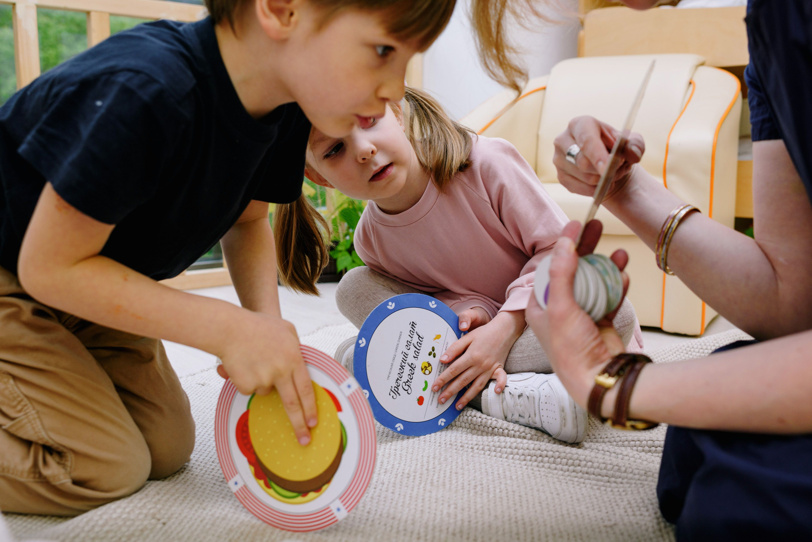

Language Disorders and Social, Emotional, and Behavioral Challenges
How to support individuals with language disorders, their families, peers, and the professionals who work with them.
How to support individuals with language disorders, their families, peers, and the professionals who work with them.
Compared to typically developing children, those with language disorders are (Yew & O’Kearney, 2012):
as likely to have overall internalizing problems
as likely to have overall externalizing problems
as likely to experience some kind of emotional, behavioral, or developmental challenges
as likely to meet the criteria for a diagnosis of ADHD

Children with language disorders are at elevated risk for depression, anxiety, and internalizing and externalizing problems. As speech-language pathologists, we are in a position where we can identify these issues early. By working with mental health experts, the child can receive comprehensive support for their speech-language needs as well as their mental health needs (Yew & O’Kearney, 2012).
Through storybooks, children explore linguistic and emotional concepts. Reading and enacting these stories helps children learn to navigate their own emotions and develope their sense of empathy for others. (Brinton & Fujiki, 2019)
Is it possible to administer effective intervention given the challenges of a real-world setting? What does bibliotherapy actually look like?
Read the story, using prompts to guide emotional understanding.
Act the story out through roleplay. You can use props. Consider reversing roles in the story and acting it out again to facilitate understanding of multiple perspectives.
Not all children will want to roleplay, so consider alternatives like drawing pictures, writing, or sticky-note thought/dialogue bubbles.
Briefly discuss the story and lessons learned.
In trials, this method has been shown effective when it was administered for 20 sessions of 20 minutes twice a week for 10 weeks (Brinton & Fujiki, 2019).
Stories should be carefuly selected to serve the child. Books should be clear and understandable with straightforward language. They should have substantial emotional content and contain situations and environments that the child will find familiar (Brinton & Fujiki, 2019). Sample lesson plans (Brinton & Fujiki, n.d.a.) and a grid of 21 stories listed by theme are available through BYU (Brinton & Fujiki, n.d.b.).
As part of a family-centered approach, SLPs need to include parents/caregivers as part of the big picture. Being responsible for a child who is facing disciplinary action due to social and emotional issues can be just as taxing on the caregiver as it is on the child and their peers.
First, it's important to reassure caregivers that there is usually a reason behind why a child may be having emotional difficulties. The sharing of this knowledge alone can help to alleviate what some caregivers might feel as a sense of shame.
Next, we can share that there are treatments available, and that we SLPs can make them part of our regular sessions.
What can we do?
Knowing what we now know about the bilbliotherapy approach, we have some tools to get treatment started for Lucas. Communicate with his parents that we plan on starting this approach in session, and that it is not at all unusual for children with language disorders to have behavioral issues similar to Lucas's.
We can recommend a holistic approach that treats the language disorder and the behavioral issues through a combination of SLP sessions, professional mental health care, and, if possible, support at home, as well.
Considering the aggressive behaviors that Lucas demonstrates, the stories we choose for him should include navigating difficult social situations. Possible themes might include cooperation, pragmatic behaviors, experiencing emotions, bullying. During the enactment portion of the exercise, Lucas can explore what it might feel like to be on either end of the narrative.
The International Federation for Biblio/Poetry Therapy has workshops and credentialing. More information can be found on their website. (International Federation for Biblio Poetry Therapy, n.d.)
IFBPTBrinton, B., & Fujiki, M. (2019). Facilitating social communication in children with developmental language disorder: A bibliotherapeutic approach. Perspectives of the ASHA Special Interest Groups, 4(3), 532–537. https://doi.org/10.1044/2019_pers-sig16-2019-0005
Brinton, B., & Fujiki, M. (n.d.a). Language delay lesson plans. Retrieved from https://education.byu.edu/buildingsocialskills/lesson-plans
Brinton, B., & Fujiki, M. (n.d.b). Social-emotional, pragmatic, and language concepts highlighted in children’s story books. Retrieved from https://education.byu.edu/sites/default/files/buildingsocialskills/2019%20Final%20CATEGORIES.pdf
International Federation for biblio poetry therapy. (n.d.). International Federation for Biblio Poetry Therapy. Retrieved September 29, 2026, from https://ifbpt.org/
Yew, S. G. K., & O’Kearney, R. (2012). Emotional and behavioural outcomes later in childhood and adolescence for children with specific language impairments: Meta‐analyses of controlled prospective studies. Journal of Child Psychology and Psychiatry, 54(5), 516–524. https://doi.org/10.1111/jcpp.12009